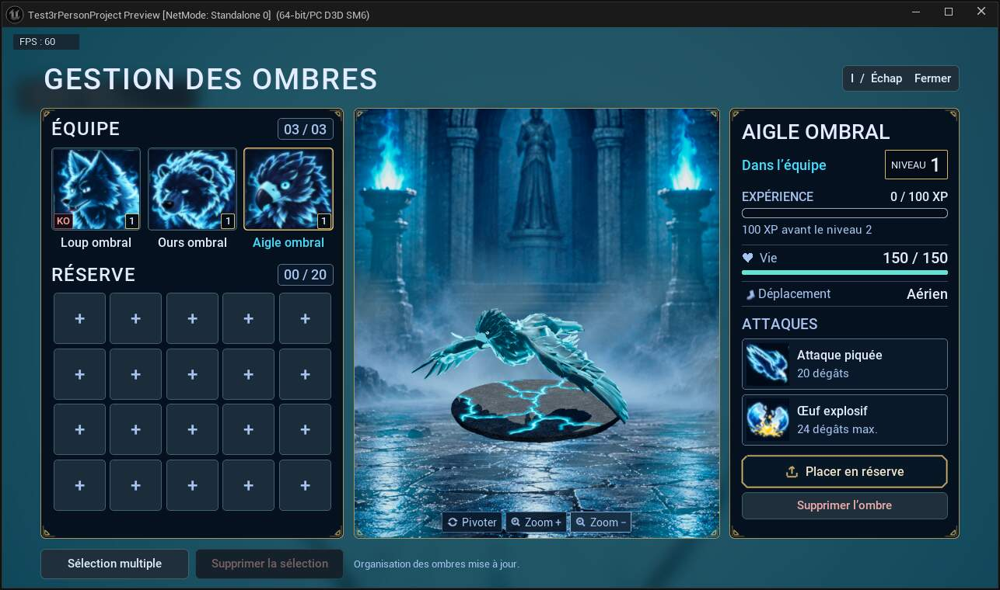

Dans cette page
Aigle ombral
Aigle ombral · apparence, comportement d’allié et collection. État du 23 octobre 2026.
Apparence ombrale
Bec crochu sombre à base claire, couronne de plumes, iris cyan et plumage bleu nuit souligné de lumière. Le modèle 3D et le portrait illustré sont distincts : le portrait garde le style anime approuvé.


IA de l’allié ombral
En solo, l’aigle suit le propriétaire en vol, se place derrière lui lorsqu’il avance et décrit une orbite lorsqu’il s’arrête. Il privilégie une cible hostile désignée et visible, puis conserve ou recherche une cible admissible à proximité du propriétaire. Il réutilise le piqué et le largage d’œuf ; les segments aériens et les obstacles sont vérifiés avant l’engagement.
Son cycle comprend l’atterrissage, trois secondes de repos au sol puis un décollage raccordé ; la sortie de réanimation prépare une pose au sol avant le vol. Il reste vulnérable pendant le repos. En multijoueur, le serveur pilote les actions aériennes et le suivi du propriétaire avec les mêmes assets d’animation, sans prétendre à une identité de tous les calculs d’IA.
Attaques et progression
Le répertoire est détaillé dans Attaques et les raccords dans Animations. La fiche de la collection affiche les dégâts de cette ombre, son niveau, son expérience acquise et l’XP restante. Les valeurs de base d’une espèce ne remplacent pas les statistiques de la fiche.
Équipe, réserve et KO
I ouvre la collection commune au solo et au multijoueur : trois places d’équipe et vingt en réserve. Une recrue rejoint la réserve si l’équipe est pleine. Clic droit ou glisser-déposer permet les transferts ; les fiches gardent leur identifiant, leur niveau, leur XP et leurs PV. Une ombre en réserve ne reste pas active sur le terrain.
Un KO reste une ombre de la collection, avec zéro PV. Déplacement, sauvegarde et déploiement ne le réaniment pas. La prévisualisation 3D peut rester en idle même pour une fiche KO : elle représente son apparence, pas un allié vivant dans la partie. La suppression, simple ou multiple, est définitive après confirmation.
Invocation et présentation
Le recrutement applique l’apparence ombrale ; le rappel et l’invocation utilisent la dissolution et le portail. La surface sombre du portail se fissure avant de disparaître. L’aperçu du menu est une copie séparée : le zoom et la rotation du socle ne changent pas la taille de l’allié dans le monde.
Modèle naturel · IA générale · Gestion des ombres · Méthode des portraits